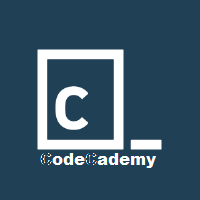

Hello And Welcome to my Sample site for digital design and computer coding 2, my final website that concludes second semester, and of course, my sophomore year (2014-2015, Franlin High School). The philosophy behind this class, as emphasized by my teacher, Mr. Jamieson, is the idea that there are resources out there, either in person (like getting help from an instructor) , from books , and more importantly, on the internet. The princible sites for getting help with coding ,or even learning a new language, can be done at the resource site w3Schools( where you can look up specific code and what certain things do, essentially a definition/how to code site) as well as the forum site StackOverflow. Alongside a lot of my peers, even the teacher admits that he is in no way an expert when using languages like Javascript, Css or HTML, main main sites for web design, and uses these sites just as much as he advocates it. As well as focusing on method of learning, my teacher also uses a site called moodle so that we may keep track of different assignments and ruberics, as well as different screencasts that will help us alongside building a project.
I came into this class knowing basically nothing about coding or web design, and I feel this was an adequate introduction to a skill that has potential as a profession, or a hobby, or just a way of life. Mr. Jamieson has spread the ideas of building on top of everything for things even outside of coding. When you're commenting out code, and working to solve a problem, this can be taken as a more general lesson for being logical, and effectively finding what you know and do nothing and singling a problem. So coding, and the class, can be taken as being a part of anybody's life in some way. We can use the ideas of timing and progress, and self teaching emphaized in this class and apply more broadly to scchool as well as many aspects of life in general.
I basically created this site in the way I did because I like the idea of linking EVERYTHING. Almost every picture in this site is clickable, and thoguh there isn't a ton of other sites linked, If I were to continue adding sites, I would want to create a sort of port to find other cool sites. Maybe I'd add a music section of the site like I did first semester. The color theme basically follows the semester 2 review project I did at the beginning of smester 2 in Febrary. The softer blueish gray styles mixed with the parially sloped, darker blue borders was supposed to create a modern and consistent style without having to go out of myt way to implement it. Just about everything that has a border has border radius style only has it in certain areas.
-My Main Sources When Coding:
-Moodle is a site where students can interact with each other and the teacher, since It has forum sections. Mr. Jamieson mainly used this site as a way to share help videos as well as documents, like ruberics. This site also features a checklist. Such a site is mainly used for organization.
Web History Reflection(We Did A bit of Writing alongside the roots of the internet, a bit of history class!):
The Internet And the world wide web were introduced in the 1960s as a way to connect the communications of different individual computers, primarily envisioned by the people in the fields of science, military or other governmental positions to be the ones utilizing it. The idea of a global network was proposed by Carl Licklider shortly after the arrival of these web ideas at MIT. This soon led to the concept of packet switching, which was worked on by Leonard Kleinrock, another MIT student. Packet switching is a network’s way of group transmitted data, and is still the basis for web communication today. By 1969, DARPA(then called ARPA) started working on the first large scale computer network , which was released under the name ARPANET, and ran at 50 kilobits per second. Moving on into he 1970s, ARPANET got emailing ability and attained a transmission control protocol using TCPs and IPs, which are still used today when transmitting data between two computers.Computers use the internet through a web browser that can transmit and receive HTTP messages from a remote server, and requests are able to be accepted from the server back to the browser. This is all established through a TCP/IP connection from the web browser to the web server. A URL is a type of resource identifier that specifies a resource by it’s location. This different areas of a URL contains many different pieces of information. First. the scheme which depicts the protocol of the application, like “http” Next is the authority, or the name of the host and/or its IP address as wella as a potential port number. The path comes after that, and is a sort od directions for the resource. The query is an optional piece that comes right after the authority, and is separated by a question(“?”) mark, and is usually information intended to be interpreted by the browser. Finally, there is the fragment, which is another piece used to pinpoint a specific directory with the resource. Sun microsystem’s netscape and Microsoft’s internet explorer were some of the early web browsers that appeared after the improved user friendliness of the internet improved after 1991 by the Gopher project. Both of these browser used the new language Javascript(called Livescript at first), and was often confused with the language Java, though they were unrelated(aside from syntax).The Javascript language started with great success in 1995 due to it easier learning curve, but with this came with a bevvy of unexperienced coders who created poor websites as well as poor examples all over the internet. Javascript had a sort of infamous attention for a while not only because of poor coders, but also because of browser sniffing and frequent pop-up ads. These browsers of Microsoft and Sun Microsystems eventually created differing syntaxes to separate themselves as a plan marketing known as the browser wars. This in turn made it much more difficult for programmers to code for both of these browsers because their applications would have to be coded for two different times. From these application problems, netscape largely dissolved as a browser as internet explorer went on as the dominant browser, at least before Firefox and Apple’s Safari were showcased in 2002-2003, which were largely affected by the standards put in place by the the teamwork of these differnet internet vendors to promote a better ability for developers to amount to their applications, knowing they would work between browsers.

(That's Me...)
-The Langs I have used:

I enjoyed this class a lot, and have found out a few things about coding that I can consider for the future.Coding can be extemely time consuming, which means that I will likely be spending out of the "9-5" working on my projects in a future coding job, just like this class. Programming is largely self taught, which is 'right up my alley." There is a bevy of fantastic resource sites out there(check the maind ones below).Using computers is often very frustrating, and you must be prepared to both run into and fix the "little things" all the time. The time will be best utilized when you can construct strategies, like commenting out code to single out issues, so that progress can swiftly continue. I'm definitely looking forward to a second part of this class, which is rumored to begin during my senior year.
Other Things That I Have Used:
Github is software that we used in classs to link all of our sites to a server, and sites would then be live.
Scratch is a browser based, simplified language for online flash game design. M game( a remake of Hotline Maimi) is linked in the games section of this site.
Bootstrap is a certain kind of css that intends to create a repsonsive site through using divs in html with linked css files. It has the aspect of "mobile first," meaning it is important that when coding that the site can be viewed responsively across many different devices, like smartphones.